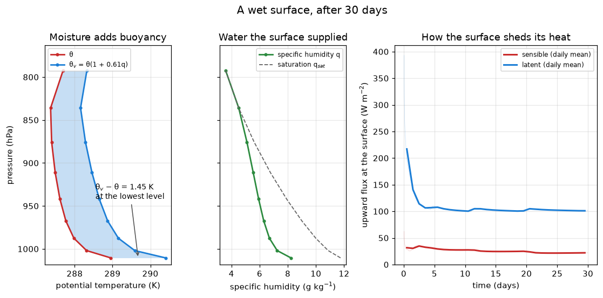

Moisture changes the buoyancy
Chapter 10 of the notes, continued. Page 8 put the surface and the air in contact, and the contact carried heat. Over water it carries water too: the surface evaporates, the boundary layer mixes the vapour upward, and the air’s buoyancy changes, because moist air is lighter than dry air at the same temperature.
The radiation changes too. Pages 7 and 8 ran dry columns: page 8’s gray radiation ignores humidity entirely, and page 7’s 14-band column had none to see. This page uses the 14-band table, so the vapour the boundary layer brings up absorbs and emits. Page 6 measured the water-vapour greenhouse effect on a humidity profile you typed in. Here the surface supplies the vapour, and the column decides for itself how much to hold.
The column
Page 8’s column, with three changes:
- the longwave is the 14-band
earth_low_res_lwtable, which sees water vapour; - the surface is wet.
stepping.SurfaceHumiditysets the surface’s specific humidity to a fixed relative humidity of its own temperature every step, and the boundary layer computes a latent heat flux from it; GridScaleCondensationremoves any vapour above saturation, and rains it out. What condensation removes shows why it has to be there.
The wind relaxation from page 8 is still in the tendency list. The latent heat flux is a bulk flux like the sensible one, so it scales with the wind, and without the relaxation this would be a dead-calm column.
A column that evaporates
Thirty days from climt’s default start, stepped hourly, as on page 8 and for the same reason: the turbulent column’s fluxes depend on the timestep. Converged, this column’s sensible heat flux is 16.5 W m⁻² stepped at 6 h, 17.2 at 3 h, 18.3 at 1 h and 18.8 at 30 minutes. Hourly is where halving the step stops mattering much.
This cell takes about a minute and a half in a browser. That is 720 steps at about 0.12 s each in Pyodide, measured with the JIT off, the native stand-in for the browser. The 14-band radiation costs about 10 times as much per step as page 8’s gray column (0.12 s against about 12 ms), and it is nearly all of the cost.

This is the figure the cell above produces. Live cells need WebAssembly; if your browser blocks it, the static version is here.
Over the last ten days of the run the surface loses 102.4 W m⁻² as latent heat and 22.0 W m⁻² as sensible heat. The ratio of the two, sensible over latent, is the Bowen ratio, and here it is 0.21. Most of the heat the turbulence takes from this surface leaves as evaporated water. It only becomes heat in the air where that water condenses.
Thirty days is not an equilibrium, and the cell says so. The column started with air at 290 K all the way up, and at day 30 it is still radiating away that initial heat, with a TOA imbalance of −82 W m⁻². Settling takes about 900 days, which would be over an hour in a browser. scripts/experiments/tour_page9_measurements.py runs that long natively, and here is where it ends up:
| day 30 (the cell; 10-day means) | day 1000 (converged; 30-day means) | |
|---|---|---|
| surface temperature | 294.04 K | 286.21 K |
| sensible heat flux | 22.0 W m⁻² | 18.3 W m⁻² |
| latent heat flux | 102.4 W m⁻² | 89.6 W m⁻² |
| Bowen ratio | 0.21 | 0.20 |
| TOA imbalance | −82 W m⁻² | −0.15 W m⁻² |
| precipitation | 3.53 mm day⁻¹ | 3.10 mm day⁻¹ |
The converged column sits at 286.2 K, about 2 K below Earth’s mean surface temperature, and over its saturated surface the latent flux far exceeds the sensible, with a Bowen ratio of 0.20. The precipitation matches the evaporation: 89.6 W m⁻² of latent heat is 3.10 mm of water a day, which is what falls. Over a real ocean the Bowen ratio is typically 0.1 to 0.2, so this lands at the top of the real range, and partly by luck. Real air over the ocean is not saturated: convection and the large-scale circulation carry vapour away and bring drier air down, and the humidity difference between the sea and the air drives the latent flux. This column has neither. What it has instead is a boundary layer that has grown about 12 km deep, and does the carrying: it mixes the vapour up into cold air that rains it out, and leaves the lowest air at about 50 % relative humidity (scripts/experiments/tour_page9_measurements.py). What the column gets right for the right reason is the direction: over water, evaporation carries most of the heat.
The same run with a dry surface converges at 266.69 K, about 20 K colder. That column has no water in it at all, so its radiation sees only CO₂. The difference is the greenhouse effect of the vapour the surface supplied, which is the quantity page 6 drew from prescribed profiles.
Why θ_v and not θ
Air rises when it is lighter than its surroundings at the same pressure. Density is what matters, and the ideal gas law gives it as
\[ \rho = \frac{p}{R_d T_v}, \qquad T_v = T\,(1 + 0.61\,q), \]
where q is the specific humidity. A water molecule (18 g mol⁻¹) is lighter than the average dry-air molecule (29 g mol⁻¹), so a kilogram of moist air holds more molecules than a kilogram of dry air. At the same pressure and temperature it must then fill more volume, and it is less dense. The 0.61 is R_v/R_d − 1, the fractional excess of the vapour’s gas constant over dry air’s.
T_v is the virtual temperature: the temperature dry air would need to have the same density. The virtual potential temperature θ_v = θ(1 + 0.61q) does the same for potential temperature. A dry parcel rises if its θ is higher than its surroundings’. A moist parcel rises if its θ_v is. The shaded gap in the left panel is therefore buoyancy that a dry column does not have. It is largest at the ground, where the air is wettest.
SimpleBoundaryLayer agrees. The bulk Richardson number that sets its depth (page 8) is written in θ_v, with the coefficient 0.608. That is R_v/R_d − 1 unrounded, and the cell below computes it from sympl’s constants. So the moisture changes the depth of the mixing. In the converged moist column the boundary layer reaches about 12.0 km. The same column over a dry surface reaches about 8.1 km, so the moisture raises the top of the mixing by roughly 4 km. (Page 8’s layer sat at 2.5 km, but that column differs in more than its moisture: its radiation is gray and its surface is 47 K warmer.)
Here is θ_v, derived from state quantities:
The last two columns agree, as they must: θ_v − θ = 0.61 q θ is the definition, rearranged. The table makes the size of it visible. At the lowest level, with 8.2 g kg⁻¹ of vapour, moisture is worth 1.45 K of potential temperature.
The headline figure shows two more things worth a look. In the left panel, θ falls with height from the ground to about 836 hPa, by about 1.6 K. That air is statically unstable. The boundary layer mixes dry static energy, which pulls the air toward the dry adiabat, a single θ, but the surface heats the bottom of the column faster than the mixing evens it out, and nothing else on this page removes it. Page 10 introduces the component that does. In the middle panel, the water has got as far as the boundary layer reaches, about 745 hPa at day 30. The mixing carries it up into colder air, which it saturates from about 836 hPa upward, while the air nearest the ground stays below saturation, at about 70 %. Above the boundary layer the air is still as dry as climt’s default state left it.
Converged, the boundary layer is far deeper, and the vapour goes with it: the air is saturated from about 590 to 180 hPa, and θ is within 1 K of 282 K all the way from the ground to 180 hPa. A boundary layer 12 km deep is doing the job of convection, and doing it crudely: it mixes the whole troposphere toward one θ, the dry adiabat, whether the air is rising or not. Lifting vapour through the troposphere properly takes moist convection, which is page 12’s subject.
Three things in that cell are there on purpose.
- Constants come from
sympl.get_constant, not from typing 287. You name the units you want,"J/kg/degK", and get a number in them. The components use the same table, so if someone changesgas_constant_of_dry_airwithsympl.set_constant, your θ changes along with the model’s. - State fields are converted before their values are taken.
moist["air_pressure"].to_units("Pa").valuesis a pressure in pascals whatever the state happens to store..valuesalone is whatever the state stores. Here that is also Pa, so you would get away with it until the day you did not. - The exponent is a ratio of two constants in the same units,
Rd / Cp, so it is a pure number.(P0 / p)is a pure number only becauseP0andpare both in Pa. That line is where a unit mistake would hide.
Look at the stepper list in the first cell. Two of its components write specific_humidity. The boundary layer adds the evaporated water at the bottom and mixes it upward. The condensation removes whatever it finds above saturation. A third component, SurfaceHumidity, writes surface_specific_humidity, which the boundary layer then reads.
stepping.integrate runs steppers one after another, each on the state the previous one left. So the order is a physical statement:
SurfaceHumidityfirst, so the boundary layer exchanges water with the surface as it is now, after the slab has just warmed or cooled.- The boundary layer next, so it mixes up whatever the surface supplies.
- Condensation last, so it sees the mixed profile. Nothing the step leaves behind is supersaturated, and the radiation at the next step sees saturated air at most.
The reverse order is defensible too: condense first, then mix, and let any supersaturation the mixing creates wait for the next step. It is a different model, though, and the first code exercise measures how different.
surface_specific_humidity needs a component at all because SimpleBoundaryLayer treats it as an input, and nothing else in the browser’s stack writes it. Set it once to a number and it stays there while the surface temperature moves underneath it. For example, 0.015 kg kg⁻¹ is saturated at about 293 K, but in a column that settles at 286 K it is 162 % of saturation. The surface would then be evaporating from something wetter than water. SurfaceHumidity recomputes it from the surface temperature every step, using the same saturation formula GridScaleCondensation uses, so “relative humidity 1” means the same thing at the surface and in the air.
The knob: surface relative humidity
SURFACE_RHS below: the surface’s relative humidity, as a fraction. Tested from 0.4 to 1.0. Outside that range is untested.
The same 30-day cold start, at a drier surface. About a minute and a half in a browser. The headline run above is the relative humidity 1.0 point.
At relative humidity 0.4 the Bowen ratio is 0.89: the sensible flux has grown to nearly match the latent. The latent flux is proportional to the surface’s humidity minus the air’s, and drying the surface shrinks that difference. The heat still has to go somewhere, so the surface warms until the sensible flux and the radiation take it. After 30 days the drier surface is about 3.4 K warmer. Converged, the partition has flipped, with Bowen ratios of 1.48 against 0.20, and the surfaces sit at 283.45 K against 286.21 K (scripts/experiments/tour_page9_measurements.py). The order of the temperatures has reversed: converged, the drier surface is 2.76 K colder. A drier surface puts less water vapour into the air, so the column has less greenhouse effect. Once the whole column has adjusted, that outweighs the surface’s reluctance to evaporate.
What condensation removes
Take condensation out of the column the headline cell just made, and step both versions ten more days. About a minute in a browser.
With condensation, the peak relative humidity never exceeds 100 %, and 3.57 mm of rain falls a day. Without it, the peak is 2876 % after ten days (273 % after the first day, measured by scripts/experiments/tour_page9_measurements.py). It sits at about 589 hPa, at the top of the boundary layer, now about 4.5 km deep, where the mixing carries surface air up into air that is 50 K colder. That air can hold far less water, and without a sink nothing takes the excess out.
The fluxes change as well. With no rain to remove it, the vapour builds up near the ground, the air above the surface approaches the surface’s own humidity, and the latent flux falls from 103.3 to 81.1 W m⁻². The Bowen ratio goes from 0.19 to 0.47.
Left alone for longer, the sink-free column does not settle at all. Started cold without condensation (scripts/experiments/tour_page9_measurements.py supersat), its lowest level holds 20 g kg⁻¹ of vapour at day 30, 52 at day 100 and 233 at day 360. The vapour is a greenhouse gas, so the surface warms as it accumulates, from 302 K at day 30 to 346 K at day 360, and a warmer surface evaporates more. After 11 145 steps (464 days) the radiation returns non-finite fluxes and the run stops. A column that can evaporate but cannot rain has no equilibrium. That is why GridScaleCondensation is in the stack on this page and every page after it.
Exercises
Physics
One kelvin of buoyancy. At what specific humidity does θ_v − θ reach 1 K, for air with θ ≈ 288 K, as in the table above? Work it out by hand, then find the level in the headline column where
qcrosses that value. Is it inside the boundary layer or above it? (It is about 5.7 g kg⁻¹.)The Bowen ratio as the surface dries. Before running the knob cell, predict how the Bowen ratio moves as the surface relative humidity falls from 1.0 to 0.4. Then predict what happens to the surface temperature, and give a reason. Run it. Is your temperature answer the same at day 30 as at equilibrium? (It is not; the knob section says why.) Then add 0.7 to
SURFACE_RHSand check whether the Bowen ratio falls along a straight line.The water-vapour greenhouse, supplied. A moist column converges at 286.2 K and a dry-surface column at 266.7 K. Set
SURFACE_RH = 0.0in the first cell (it is bound intomoist_columnwhen that cell runs), re-run the first two cells, and confirm that the dry column’s humidity stays at zero and its latent flux vanishes. Which of the page’s components readspecific_humidityat all? Print each one’sinput_propertiesto find out.
Code
Swap the order. Build the stepper list with
GridScaleCondensationbeforeSimpleBoundaryLayer, run the headline cell, and compare the peak relative humidity the step leaves behind and the Bowen ratio. (Measured on converged 1000-day runs: condensing first leaves the column at 168 % relative humidity at its peak at the end of each step, because the mixing comes after the sink. The climate notices too, a little: the surface is 1.04 K warmer, and the Bowen ratio is 0.16 against 0.20. One likely reason: the vapour the mixing carries up to supersaturation waits a step before it rains, and while it waits the radiation sees it.)Relative humidity against height. Plot
soundings.relative_humidityfor both states in the condensation cell against pressure. Where does the supersaturation build up, and why there rather than at the ground? The column’sboundary_layer_heightdiagnostic, in metres, is one clue.Close the water budget. Converged, the column rains out exactly what it evaporates: 3.10 mm a day each. Add
evap=budgets.evaporation_ratetorecorder(), re-run the headline cell, and plot evaporation and precipitation against time. When they differ, the column’s water content is changing. Check that with the column’s total water,(q * dp / g).sum(), wheredpcomes frombudgets.pressure_thickness.
Going deeper
Page 6 is the other half of this page. It holds the relative humidity fixed and asks what the vapour does to the outgoing longwave, on prescribed profiles, all the way to the runaway limit. The column here supplies its own vapour and sets its own profile, but the radiation code it calls is the same.